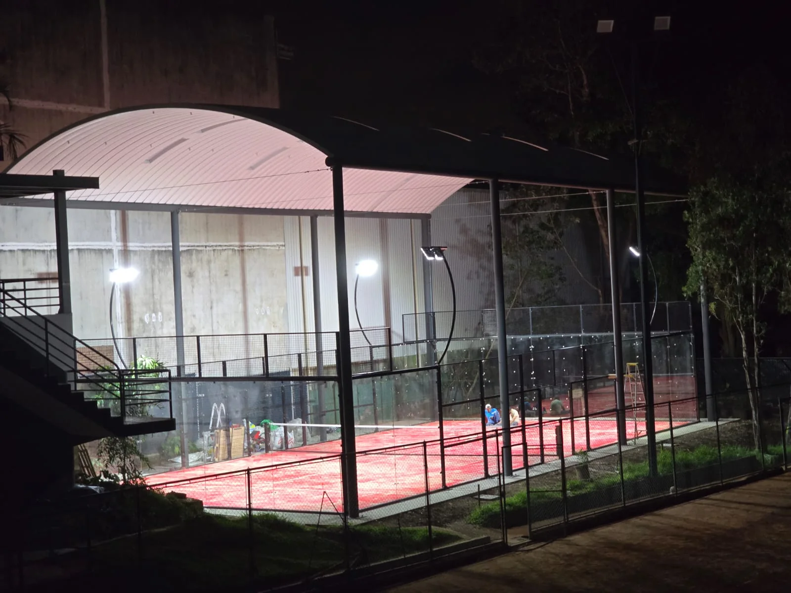

Revenue Is Not Profit
A full booking calendar can look impressive while the club still struggles financially. High rent, debt service, excessive staffing, a costly roof or building, aggressive discounts and underused daytime capacity can absorb a large share of revenue.
Recent Reddit discussions show why utilization assumptions deserve scrutiny. In one 2026 business-model discussion, an 85% utilization assumption was challenged as too optimistic and commenters recommended stress-testing the plan at materially lower occupancy. In another club-owner discussion, filling weekday office hours was named as a major operating challenge.
Separate peak from off-peak, subtract discounts and taxes where applicable, include downtime and then compare the result with the entire venue cost base.
The Core Padel Club Revenue Formula
A practical starting formula is:
Annual court-booking revenue = courts × available hours × days × occupancy × net revenue per booked court-hour
But do not use one occupancy percentage across the whole day. A better model separates:
- Weekday mornings.
- Weekday daytime.
- Weekday evenings.
- Weekend mornings.
- Weekend afternoons / evenings.
- Seasonal or weather-affected periods.
Illustrative Court-Hour Model
The table below is a calculation framework, not a market forecast. Replace every number with local evidence.
| Input | Example variable | What to verify |
|---|---|---|
| Courts | 2 / 4 / 6+ | Demand, site size and expansion plan |
| Open hours | Hours per day | Planning, staffing and local demand |
| Peak occupancy | Scenario input | Competitor booking calendars and presales |
| Off-peak occupancy | Scenario input | Coaching, retirees, students, corporate use |
| Net court rate | After discounts / taxes | Actual local willingness to pay |
| Weather downtime | Hours or % removed | Outdoor climate and roof strategy |
| Maintenance downtime | Hours removed | Turf, glass, lighting and repairs |
Do Not Model 85% Occupancy as the Default
Very high utilization may happen at specific clubs or during peak windows, but applying it to every available hour can overstate revenue dramatically. A 2026 Reddit thread about a proposed club model specifically challenged an 85% utilization assumption and recommended a lower stress-test case.
Build at least three scenarios:
| Scenario | Purpose |
|---|---|
| Conservative | Tests whether the business survives slower adoption, weak daytime demand and pricing pressure. |
| Base | Uses the most defensible local demand and pricing assumptions. |
| High | Shows upside if booking density, coaching and events outperform expectations. |
If the project only works in the high case, the business model deserves more validation before construction.
Peak and Off-Peak Economics Are Different
Club owners frequently report that evening bookings are easier to fill than weekday office hours. That means an average utilization figure can hide the real problem. A club can be sold out at 7 PM while carrying a large amount of unused inventory at 11 AM.
Ways operators may improve off-peak utilization include coaching, junior programs, schools, corporate sessions, retirees, university partnerships, memberships with time restrictions and discounted open-play formats. Each program should still be tested for margin—not only occupancy.
Revenue Stream 1: Court Bookings
Court rental is the cleanest revenue stream to model because it is directly linked to inventory. Use the net realized rate rather than the advertised peak price. Discounts, memberships, promotions, free sponsor hours and bundled coaching can reduce the actual revenue per booked hour.
Recent U.S. player discussion also shows the risk of pushing premium pricing too far: some players describe high hourly rates and premium-only positioning as a barrier to participation. A higher price does not automatically create higher profit if it lowers adoption or retention.
Revenue Stream 2: Coaching and Academy Programs
Coaching can generate revenue and fill off-peak inventory, but the accounting needs to be clear. If a lesson fee already includes the court, do not count the same court-hour once as rental revenue and again at full value as coaching revenue.
Model:
- Private coaching.
- Group clinics.
- Junior academy.
- Beginner programs.
- Coach revenue share or payroll.
- Court opportunity cost during peak hours.
Revenue Stream 3: Social Play, Leagues and Events
Americano nights, leagues, corporate events and tournaments can improve engagement and use multiple courts at once. They can also create secondary food-and-beverage or sponsorship revenue. But event staffing, prizes, software, marketing and blocked booking inventory need to be included.
Revenue Stream 4: Memberships
Membership can improve retention and cash-flow visibility, but unlimited or poorly designed benefits can reduce revenue per court-hour during peak demand. Model what members actually receive: booking priority, discounts, free hours, social events, coaching benefits or lounge access.
Revenue Stream 5: Food, Beverage and Retail
Current Reddit club-planning discussions repeatedly mention social areas, cafés and bars as part of the club experience. These can improve dwell time and customer retention, but they are separate businesses with labor, inventory, waste, licensing and margin considerations.
A 2026 planning discussion even recommended fitting fewer courts and allocating more space to a genuinely attractive social area. That is a useful reminder that maximizing court count is not always the same as maximizing venue value.
The Cost Stack: What the Revenue Must Pay For
| Operating cost | Examples |
|---|---|
| Property | Rent, land lease, service charges, property taxes where applicable |
| Payroll | Reception, management, cleaning, coaching arrangements, maintenance |
| Utilities | Lighting, HVAC, water, controls, internet |
| Software | Booking, payment, CRM, access control |
| Marketing | Launch, paid acquisition, events, community programs |
| Insurance / compliance | Local insurance, permits, inspection and professional fees |
| Maintenance | Turf, sand, glass, steel, lighting, drainage, roof and cleaning |
| Finance | Interest, leasing, lender fees or investor return requirements |
| Replacement reserve | Turf renewal, lighting, glass and mechanical roof components |
Use the Padel Court Maintenance Guide to build the recurring and lifecycle reserve.
CAPEX: The Investment Before the Club Opens
Initial capital can include court systems, foundations, drainage, freight, customs, installation, roof or building works, lighting and electrical infrastructure, reception, changing rooms, parking, professional fees, permits, furniture, software and pre-opening marketing.
The Padel Court Cost 2026 guide separates court equipment from the wider project budget.
Break-Even Occupancy: The More Useful Number
Instead of asking “What ROI will I get?”, first calculate the utilization needed to cover fixed and variable costs.
Break-even booked court-hours = annual cost base − non-court contribution ÷ net contribution per booked court-hour
Then divide required booked hours by total sellable court-hours. This gives a break-even utilization estimate for the assumptions in your model.
Be careful with the denominator. Remove planned closures, maintenance, weather downtime and hours you intentionally reserve for events or free programs.
Illustrative Stress Test
| Test | Ask |
|---|---|
| Occupancy -20% | Can the club still cover fixed operating costs? |
| Price -10% | What if a competitor opens nearby? |
| Rent +10% | Does the lease remain viable at renewal? |
| Payroll +15% | Can the club maintain service quality? |
| Three wet months | How does outdoor downtime change cash flow? |
| Opening delayed | How much additional working capital is required? |
| One court offline | Can the remaining inventory absorb bookings? |
Weather Can Be a Financial Variable
For outdoor clubs, rainfall, wind and heat can directly remove sellable hours. A roof can reduce some of that volatility but adds capital, foundations, drainage and maintenance. Model both cases instead of assuming a roof is always worthwhile or always too expensive.
Use Outdoor Padel Court Without a Roof and Padel Court Roof Cost 2026 to compare weather protection against protected revenue.
Premium vs Affordable: Pricing Is a Positioning Decision
A 2026 Reddit discussion asks directly whether a new club should pursue luxury or accessible positioning. The strongest response focuses on occupancy, location and who can actually play during the middle of the day. That is the right frame: pricing, amenities and target customer have to fit the local market together.
Premium amenities can support higher pricing in some markets, but they also raise capital and operating costs. An accessible club may achieve lower revenue per booking but broader participation. Test both models with the same occupancy discipline.
How Court Count Changes Profitability
More courts create more sellable inventory and programming flexibility, but they also increase capital, maintenance, staffing and site requirements. A two-court project may have low redundancy; a six-court project may face off-peak overcapacity.
Use How Many Padel Courts Does a Club Need? before assuming that the largest layout will produce the best return.
Working Capital Is Often Missing From the Project Budget
The club may incur rent, payroll, software, utilities and marketing before revenue reaches steady state. Planning approvals or construction can also delay opening. A newly opened five-court canopied Greater Manchester club reported a 14-month planning process in its Reddit discussion, illustrating how non-court delays can affect project timing.
Keep a separate working-capital reserve rather than using every available dollar on construction.
What Not to Put in a Padel Business Plan
- 100% utilization during all operating hours.
- Peak price applied to every booking.
- No maintenance or replacement reserve.
- No weather downtime for uncovered courts.
- No ramp-up period after opening.
- No competitive response or discounting.
- No working capital.
- No allowance for permitting or opening delays.
- A guaranteed payback period based on supplier marketing.
A Better Investor Dashboard
| KPI | Why it matters |
|---|---|
| Peak utilization | Shows whether more capacity may be justified |
| Off-peak utilization | Shows whether inventory is being monetized all day |
| Net revenue / booked court-hour | Captures discounts and realized pricing |
| Revenue / available court-hour | Combines price and utilization |
| Coaching contribution | Measures academy value after coach cost and court use |
| Customer acquisition cost | Tests whether paid growth is efficient |
| Repeat booking rate | Signals retention and community strength |
| Maintenance cost / court | Tracks lifecycle burden |
| Free cash flow | More useful for investment recovery than gross revenue |
Community Discussions That Informed This Guide
- 2026 club model discussion: utilization assumptions and stress testing
- Club owners: operating challenges including weekday utilization
- Premium vs affordable padel club model
- New club planning: social space vs maximum court density
- Five-court canopied club opening and planning experience
- Sydney feasibility discussion: demand, court sourcing and full project cost
Building a padel club business case?
Send the country, city, target court count, venue format, site dimensions and roof strategy. SPORTENVO can define the court, foundation and weather-protection scope so your financial model starts with a realistic project boundary.
Define My Project Scope →Padel Club Profitability FAQ
Are padel clubs profitable?
Some can be, but profitability is not guaranteed. Local demand, occupancy, price, rent, staffing, weather, financing and capital cost all matter.
How do I calculate court revenue?
Multiply sellable court-hours by realistic occupancy and net revenue per booked hour, then add separate ancillary revenue without double counting.
What utilization rate should I use?
Do not use a universal rate. Separate peak and off-peak assumptions and stress-test a conservative scenario using local evidence.
What costs should be included?
Include property, payroll, utilities, software, marketing, insurance, maintenance, replacement reserves, financing and the original project investment.
How long is the payback period?
There is no reliable universal period. Calculate payback from project-specific free cash flow and test lower occupancy, lower pricing and cost increases before relying on the base case.
Use the Padel Club Business Plan: 15 Checks Before You Invest as the investor-level feasibility checklist.